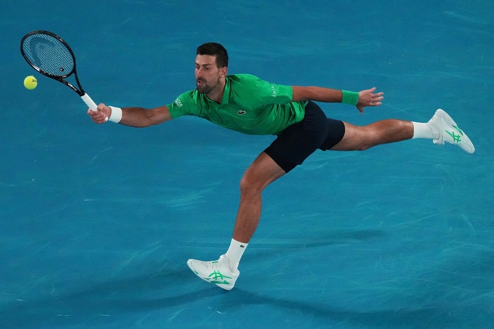

Vì sao thần đồng hiếm khi thành người xuất chúng?
Nhiều phụ huynh tin rằng khổ luyện từ bé sẽ tạo ra thiên tài, nhưng nghiên cứu mới trên 34.000 người ưu tú cho thấy những cá nhân xuất sắc nhất thế giới thường là người "nở muộn".
Novak Djokovic cầm vợt năm 4 tuổi, xa nhà năm 12 tuổi và giành Grand Slam đầu tiên khi vừa tròn 20. Đến nay, với sự nghiệp đồ sộ, anh là minh chứng sống động cho niềm tin: muốn
đỉnh cao, phải chuyên sâu từ nhỏ.
Nhưng một nghiên cứu vừa công bố trên tạp chí Science cuối năm 2025 cho rằng Djokovic là ngoại lệ, không phải quy luật.
Tiến sĩ Arne Güllich, Đại học RPTU Kaiserslautern-Landau (Đức) và cộng sự đã phân tích dữ liệu của hơn 34.000 cá nhân ưu tú trong các lĩnh vực thể thao, âm nhạc và khoa học. Kết
quả khiến nhiều người bất ngờ: những đứa trẻ được rèn luyện khắc nghiệt trong các "lò luyện" hiếm khi duy trì được vị thế khi trưởng thành.
Ngược lại, đa số những người đạt đỉnh cao thế giới thường có tuổi thơ bình thường, thử sức ở nhiều lĩnh vực trước khi chọn lối đi riêng.

Novak Djokovic trong trận đối đầu tay vợt Pedro Martinez trong giải Australia mở rộng, ngày 19/1
Thần đồng và Thiên tài là hai đường thẳng song song
Dữ liệu chỉ ra 90% người lớn có thành tựu đặc biệt xuất sắc không hề nổi bật lúc nhỏ. Chỉ 10% thần đồng duy trì được hào quang. Thậm chí, thành tích quá cao thời thơ ấu đôi
khi tỷ lệ nghịch với thành công sau này.
Trong thể thao, các vận động viên vĩ đại thường chơi đa dạng môn trước khi chuyên môn hóa. Điều này giúp họ tích lũy nền tảng thể chất và tư duy đa chiều, từ đó tiến bộ nhanh
hơn ở giai đoạn sau.
Tương tự, các nhà khoa học đoạt giải Nobel thường ít nhận học bổng thời trẻ và có hồ sơ khởi đầu khiêm tốn hơn so với những đồng nghiệp chỉ dừng lại ở mức "giỏi". Họ mất nhiều
thời gian hơn để lên chức giáo sư, nhưng khi đã "chín", họ tạo ra những đột phá thay đổi lịch sử.
Giải mã hiện tượng "nở muộn"
Nhóm nghiên cứu đưa ra ba lý do khiến việc "chậm mà chắc" lại thắng thế:
Thứ nhất là nguyên lý "Tìm kiếm và phù hợp". Thử nghiệm nhiều sở thích giúp cá nhân tìm ra đúng lĩnh vực khớp với tài năng thiên bẩm nhất. Rafael Nadal từng cân nhắc làm cầu
thủ bóng đá trước khi chọn quần vợt và trở thành huyền thoại.
Thứ hai là "Học tập tăng cường". Kỹ năng học hỏi quan trọng hơn kiến thức cụ thể. Việc xoay xở giữa nhiều bộ môn giúp não bộ linh hoạt, khiến quá trình chuyên sâu sau này
hiệu quả hơn.
Cuối cùng là "Hạn chế rủi ro". Tránh xa các "lò luyện gà nòi" sớm giúp trẻ không bị kiệt sức (burnout), chán nản hay chấn thương – những sát thủ thầm lặng của tài năng.
Tiến sĩ Güllich nhấn mạnh, đào tạo chuyên sâu từ sớm vẫn tạo ra những người thợ giỏi, nhưng hiếm khi tạo ra nghệ nhân hay thiên tài. "Các học viện thể thao, trường chuyên
hay nhạc viện có lẽ cần suy nghĩ lại về phương pháp của mình", nhóm tác giả khuyến nghị.